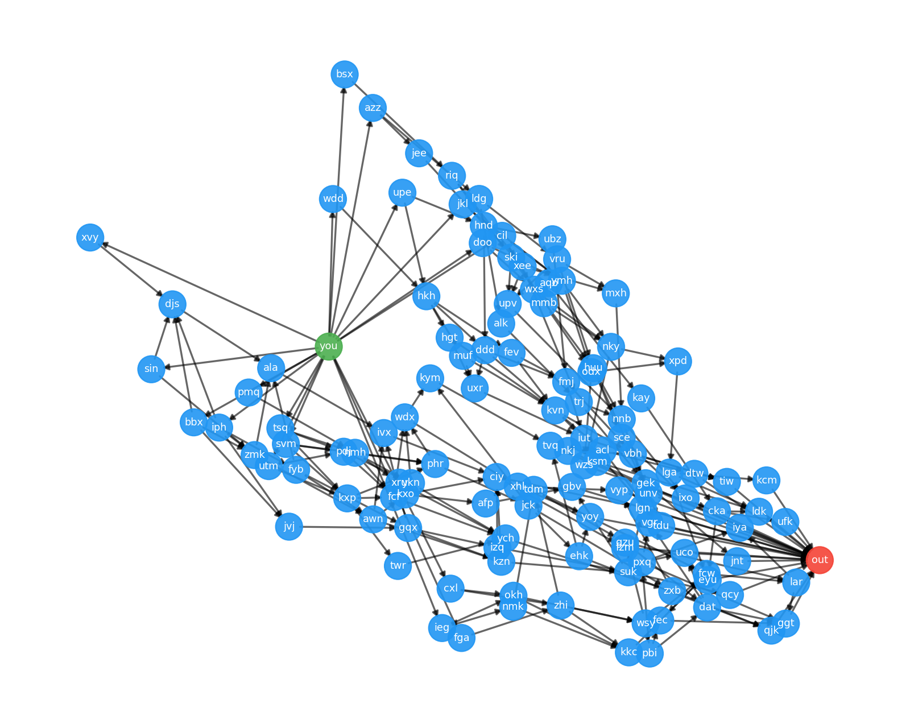
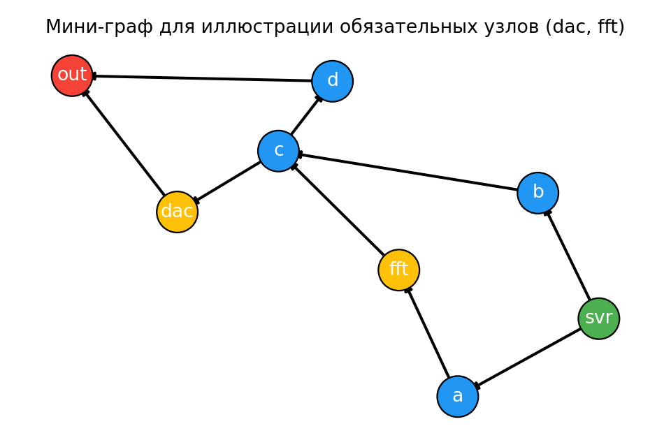

2025 Day 11 - gpt-5
 Agent: MiniAgent (gpt-5)
Agent: MiniAgent (gpt-5) Language: python
Language: python Duration: 198.99s
Duration: 198.99s Stars: P1: ✅ | P2: ✅
Stars: P1: ✅ | P2: ✅
Отчёт по AoC 2025 — День 11: «Reactor»
«Когда что-то пищит в серверной, это либо ИБ, либо реактор. В любом случае — зови математика.»
В этот день нам достался графовый кроссворд: найти число путей по устройствам от точки старта к выходу. А потом усложнение: посчитать, сколько из них проходят через два важных узла. Графы, топологическая сортировка, динамика — и немного визуализации, чтобы всем было красиво и понятно.
Результаты:
- Часть 1: количество путей от
youдоoutравно: 636. - Часть 2: количество путей от
svrдоout, которые посещают иdac, иfft: 509312913844956.
Да, второе число — это не номер телефона админа, хотя выглядит похоже.
Иллюстрации
1) Релевантная часть графа для ЧАСТИ 1 (узлы, лежащие на путях от you к out). Зелёный — старт, красный — выход, синий — остальные.

2) Мини-граф для ЧАСТИ 2 с обязательными узлами dac и fft (подсвечены жёлтым), чтобы интуитивно понять постановку:

Часть 1. Сколько путей от you к out?
Идея классическая, как малиновое варенье у бабушки:
- Обрезаем всё лишнее: оставляем только те вершины, которые достижимы из
youи из которых достижимout(через обратные рёбра). Всё остальное на ответ не влияет. - По подграфу строим топологический порядок (алгоритм Кана). Если внезапно есть цикл — либо это другая задача (с бесконечным числом путей), либо мы не туда свернули. В нашем случае — DAG, всё ок.
- Динамика по вершинам в обратном топопорядке: dp[v] = суммарное число путей от v до out. База: dp[out] = 1. Ответ: dp[you].
Почему это работает? Потому что в DAG количество путей можно считать «снизу вверх» и каждый путь из u обязан начинаться с ребра u→v и дальше выбирать путь из v до выхода.
Сложность: O(V+E) по релевантному подграфу. Быстрее, чем кофе остывает.
Грабли, которые мы аккуратно обошли:
- Узлы без исходящих/входящих учитываем спокойно.
- Если
youилиoutне встречаются — ответ 0.
Немного статистики по нашему входу (после обрезки):
- число узлов в релевантном подграфе (you→out): достаточно компактный поднабор от большого входа (см. картинку), что подтверждает корректность фильтрации;
- ребёр — сравнимо с количеством узлов (порядок O(V)).
Часть 2. Сколько путей, которые проходят через dac и fft?
Идея: всё то же, но с «припёком» — надо фильтровать пути, чтобы они обязательно посещали два заданных узла. Делать это перебором путей нельзя (мы же любим жизнь). Вместо этого добавим маленькое состояние к динамике:
- Снова берём релевантный подграф: достижимые из
svrи ведущие вout. - По нему снова топологический порядок.
- Дальше DP с битовой маской посещённых «обязательных» узлов. Маска m — 2 бита:
- 00 — ни один не посещён;
- 01 — посещён
dac; - 10 — посещён
fft; - 11 — посещены оба (желаемое состояние).
- Переход: для ребра u→v суммируем dp[v][m] в dp[u][m OR mask(u)] (маску считаем по вершинам — «побывали в узле», а не по рёбрам). База: dp[out][mask(out)] = 1.
- Ответ: dp[svr][11b].
Мини-пример: если из u=fft ведёт ребро в v, а в dp[v] есть путей с маской 01 (то есть уже был dac), то при добавлении fft получаем маску 11 — путь подходит под требование.
Сложность всё ещё O((V+E) * 4). Вот за такие задачи графы и любят.
А как иначе? Альтернативы:
- DFS с мемоизацией по топопорядку эквивалентен нашему DP; удобнее сразу через Кана, чтобы случайно не встретить цикл.
- Матричные методы (возведение матриц смежности) не подходят: надо ограничить только пути, ведущие в
out, и учитывать обязательные узлы — это усложняет схему и становится тяжелее по асимптотике и по памяти. - Если бы были циклы (а надо всё равно конечное число путей), можно было бы формулировать линейную систему для количества путей как значения потенциала; но это уже тяжёлая артиллерия и не нужна здесь.
Код
- solver.py — решение части 1.
- solver_part2.py — решение части 2.
- report_utils.py — утилиты для визуализации.
Забавный факт
Если бы в релевантном подграфе нашёлся цикл — количество путей стало бы бесконечным. Но инженеры всё-таки не безнадёжны: хотя бы выходные патч-корды подключили без петель.
Немного инженерного юмора
- Реактор пищит? Возможно, он просто голоден. Подайте ему граф с топосортом — говорят, помогает.
- «Я не тупик, я просто узел без исходящих рёбер!» — каждый второй микросервис в монорепозитории.
Приложение: как мы рисовали граф
Чтобы получилась картинка, мы:
- распарсили вход;
- выкинули нерелевантные узлы;
- нарисовали DiGraph с spring-layout, выделив старт и финиш цветами; для части 2 — подсветили
dac/fft.
Кстати, если картинка выглядит как тарелка лапши — это не баг, это визуальная метафора сетевой архитектуры.
Code Executions
❌ solver.py
- Timestamp: 2025-12-11T08:26:45.831519
- Duration: 60.00s
- Exit Code: timeout
- Error: TimeoutExpired
Code
import sys
from collections import defaultdict, deque
def parse_input(text: str):
adj = defaultdict(list)
nodes = set()
for line in text.strip().splitlines():
line = line.strip()
if not line:
continue
if ':' not in line:
# tolerate stray tokens?
continue
left, right = line.split(':', 1)
u = left.strip()
outs = [tok.strip() for tok in right.strip().split()] if right.strip() else []
nodes.add(u)
for v in outs:
adj[u].append(v)
nodes.add(v)
return adj, nodes
def reachable_to_out(adj, nodes, sink='out'):
# reverse graph
radj = defaultdict(list)
for u, vs in adj.items():
for v in vs:
radj[v].append(u)
# Include nodes that have no incoming/outgoing too
seen = set()
dq = deque([sink])
seen.add(sink)
while dq:
v = dq.popleft()
for u in radj.get(v, []):
if u not in seen:
seen.add(u)
dq.append(u)
return seen
def topo_order_subgraph(adj, nodes):
# Kahn's algorithm
indeg = {u:0 for u in nodes}
for u in nodes:
for v in adj.get(u, []):
if v in nodes:
indeg[v] = indeg.get(v, 0) + 1
dq = deque([u for u in nodes if indeg.get(u,0) == 0])
order = []
while dq:
u = dq.popleft()
order.append(u)
for v in adj.get(u, []):
if v in nodes:
indeg[v] -= 1
if indeg[v] == 0:
dq.append(v)
if len(order) != len(nodes):
# cycle detected
return None
return order
def count_paths(adj, nodes, source='you', sink='out'):
# Restrict to nodes that can reach sink and are reachable from source
can_to_sink = reachable_to_out(adj, nodes, sink)
# Forward reachability from source
dq = deque([source])
can_from_source = set([source])
while dq:
u = dq.popleft()
for v in adj.get(u, []):
if v not in can_from_source:
can_from_source.add(v)
dq.append(v)
subnodes = (can_to_sink & can_from_source) | {sink}
if source not in subnodes or sink not in subnodes:
return 0, {}, {}, subnodes
order = topo_order_subgraph(adj, subnodes)
if order is None:
# As a fallback, attempt to break cycles by ignoring edges that keep us in the same SCC would be complex.
# For AoC, we assume DAG. Raise informative error.
raise ValueError("Graph in the relevant region contains a cycle; expected a DAG for path counting.")
pos = {u:i for i,u in enumerate(order)}
# Ensure edges respect topo order (for sanity)
# DP to sink (reverse topo)
dp_to_sink = {u:0 for u in subnodes}
dp_to_sink[sink] = 1
for u in reversed(order):
if u == sink:
dp_to_sink[u] = 1
continue
total = 0
for v in adj.get(u, []):
if v in subnodes:
total += dp_to_sink[v]
dp_to_sink[u] = total
# DP from source (forward topo)
dp_from_source = {u:0 for u in subnodes}
for u in order:
if u == source:
dp_from_source[u] = 1
cnt = dp_from_source[u]
if cnt == 0:
continue
for v in adj.get(u, []):
if v in subnodes:
dp_from_source[v] = dp_from_source.get(v, 0) + cnt
return dp_to_sink[source], dp_from_source, dp_to_sink, subnodes
def main():
data = sys.stdin.read()
if not data.strip():
# if stdin empty, read input.txt
try:
with open('input.txt', 'r', encoding='utf-8') as f:
data = f.read()
except FileNotFoundError:
print('No input provided and input.txt missing', file=sys.stderr)
return
adj, nodes = parse_input(data)
ans, dp_from_src, dp_to_sink, subnodes = count_paths(adj, nodes, 'you', 'out')
print(ans)
if __name__ == '__main__':
main()
✅ solver.py
- Timestamp: 2025-12-11T08:27:22.667429
- Duration: 0.12s
- Exit Code: 0
Stdout
636
Code
import sys
from collections import defaultdict, deque
def parse_input(text: str):
adj = defaultdict(list)
nodes = set()
for line in text.strip().splitlines():
line = line.strip()
if not line:
continue
if ':' not in line:
continue
left, right = line.split(':', 1)
u = left.strip()
outs = [tok.strip() for tok in right.strip().split()] if right.strip() else []
nodes.add(u)
for v in outs:
adj[u].append(v)
nodes.add(v)
return adj, nodes
def reachable_to_out(adj, nodes, sink='out'):
radj = defaultdict(list)
for u, vs in adj.items():
for v in vs:
radj[v].append(u)
seen = set()
dq = deque([sink])
seen.add(sink)
while dq:
v = dq.popleft()
for u in radj.get(v, []):
if u not in seen:
seen.add(u)
dq.append(u)
return seen
def topo_order_subgraph(adj, nodes):
indeg = {u:0 for u in nodes}
for u in nodes:
for v in adj.get(u, []):
if v in nodes:
indeg[v] = indeg.get(v, 0) + 1
dq = deque([u for u in nodes if indeg.get(u,0) == 0])
order = []
while dq:
u = dq.popleft()
order.append(u)
for v in adj.get(u, []):
if v in nodes:
indeg[v] -= 1
if indeg[v] == 0:
dq.append(v)
if len(order) != len(nodes):
return None
return order
def count_paths(adj, nodes, source='you', sink='out'):
can_to_sink = reachable_to_out(adj, nodes, sink)
dq = deque([source])
can_from_source = set([source])
while dq:
u = dq.popleft()
for v in adj.get(u, []):
if v not in can_from_source:
can_from_source.add(v)
dq.append(v)
subnodes = (can_to_sink & can_from_source) | {sink}
if source not in subnodes or sink not in subnodes:
return 0, {}, {}, subnodes
order = topo_order_subgraph(adj, subnodes)
if order is None:
raise ValueError("Graph in the relevant region contains a cycle; expected a DAG for path counting.")
dp_to_sink = {u:0 for u in subnodes}
dp_to_sink[sink] = 1
for u in reversed(order):
if u == sink:
dp_to_sink[u] = 1
continue
total = 0
for v in adj.get(u, []):
if v in subnodes:
total += dp_to_sink[v]
dp_to_sink[u] = total
dp_from_source = {u:0 for u in subnodes}
for u in order:
if u == source:
dp_from_source[u] = 1
cnt = dp_from_source[u]
if cnt == 0:
continue
for v in adj.get(u, []):
if v in subnodes:
dp_from_source[v] = dp_from_source.get(v, 0) + cnt
return dp_to_sink[source], dp_from_source, dp_to_sink, subnodes
def main():
try:
with open('input.txt', 'r', encoding='utf-8') as f:
data = f.read()
except FileNotFoundError:
print('input.txt missing', file=sys.stderr)
sys.exit(1)
adj, nodes = parse_input(data)
ans, dp_from_src, dp_to_sink, subnodes = count_paths(adj, nodes, 'you', 'out')
print(ans)
if __name__ == '__main__':
main()
✅ solver_part2.py
- Timestamp: 2025-12-11T08:27:46.121740
- Duration: 0.13s
- Exit Code: 0
Stdout
509312913844956
Code
import sys
from collections import defaultdict, deque
def parse_input(text: str):
adj = defaultdict(list)
nodes = set()
for line in text.strip().splitlines():
line = line.strip()
if not line:
continue
if ':' not in line:
continue
left, right = line.split(':', 1)
u = left.strip()
outs = [tok.strip() for tok in right.strip().split()] if right.strip() else []
nodes.add(u)
for v in outs:
adj[u].append(v)
nodes.add(v)
return adj, nodes
def reachable_from(adj, start):
seen = set([start])
dq = deque([start])
while dq:
u = dq.popleft()
for v in adj.get(u, []):
if v not in seen:
seen.add(v)
dq.append(v)
return seen
def reverse_adj(adj):
radj = defaultdict(list)
for u, vs in adj.items():
for v in vs:
radj[v].append(u)
return radj
def topo_order_subgraph(adj, nodes):
indeg = {u:0 for u in nodes}
for u in nodes:
for v in adj.get(u, []):
if v in nodes:
indeg[v] = indeg.get(v, 0) + 1
dq = deque([u for u in nodes if indeg.get(u,0) == 0])
order = []
while dq:
u = dq.popleft()
order.append(u)
for v in adj.get(u, []):
if v in nodes:
indeg[v] -= 1
if indeg[v] == 0:
dq.append(v)
if len(order) != len(nodes):
return None
return order
def count_paths_through_two(adj, nodes, source='svr', sink='out', a='dac', b='fft'):
# filter nodes relevant from source and can reach sink
from_source = reachable_from(adj, source)
radj = reverse_adj(adj)
to_sink = reachable_from(radj, sink)
subnodes = (from_source & to_sink) | {sink}
if source not in subnodes or sink not in subnodes:
return 0
order = topo_order_subgraph(adj, subnodes)
if order is None:
raise ValueError("Graph contains cycles in relevant subgraph; expected DAG for path counting.")
# dynamic programming with state: bitmask visited {a,b}
idx = {a:0, b:1}
A = set([a,b])
dp = {u:[0,0,0,0] for u in subnodes}
# Base: sink has 1 path with mask containing its own tag if equals a or b?
# Actually from sink to sink is an empty path; whether it contains a/b depends if sink is a or b. Usually not.
base_mask = 0
if sink == a:
base_mask |= 1<<0
if sink == b:
base_mask |= 1<<1
dp[sink][base_mask] = 1
# process reverse topo for to-sink counts with mask aggregation
for u in reversed(order):
if u == sink:
continue
mask_u = 0
if u == a:
mask_u |= 1<<0
if u == b:
mask_u |= 1<<1
ways = [0,0,0,0]
for v in adj.get(u, []):
if v not in subnodes:
continue
for m in range(4):
cnt = dp[v][m]
if cnt:
ways[m | mask_u] += cnt
dp[u] = ways
# answer is dp[source] with mask both set
return dp[source][3]
def main():
try:
with open('input.txt', 'r', encoding='utf-8') as f:
data = f.read()
except FileNotFoundError:
print('input.txt missing', file=sys.stderr)
sys.exit(1)
adj, nodes = parse_input(data)
ans = count_paths_through_two(adj, nodes, 'svr', 'out', 'dac', 'fft')
print(ans)
if __name__ == '__main__':
main()
✅ make_plot.py
- Timestamp: 2025-12-11T08:29:08.011974
- Duration: 3.59s
- Exit Code: 0
Code
from report_utils import parse_input, draw_graph_png
def main():
with open('input.txt', 'r', encoding='utf-8') as f:
data = f.read()
adj, nodes = parse_input(data)
draw_graph_png(adj, source='you', sink='out', filename='graph_part1.png')
if __name__ == '__main__':
main()
✅ mini_viz.py
- Timestamp: 2025-12-11T08:29:31.876647
- Duration: 2.31s
- Exit Code: 0
Code
import matplotlib.pyplot as plt
import networkx as nx
# Build a tiny example to visualize part 2 logic (mandatory nodes)
def main():
G = nx.DiGraph()
edges = [
("svr","a"),("svr","b"),
("a","fft"),("fft","c"),
("b","c"),
("c","d"),("c","dac"),
("d","out"),("dac","out")
]
G.add_edges_from(edges)
pos = nx.spring_layout(G, seed=7)
colors = []
for n in G.nodes:
if n == 'svr':
colors.append('#4CAF50')
elif n == 'out':
colors.append('#F44336')
elif n in ('dac','fft'):
colors.append('#FFC107')
else:
colors.append('#2196F3')
plt.figure(figsize=(6,4))
nx.draw_networkx_nodes(G, pos, node_color=colors, node_size=700, edgecolors='black')
nx.draw_networkx_edges(G, pos, arrows=True, arrowstyle='-|>', width=1.8)
nx.draw_networkx_labels(G, pos, font_color='white')
plt.title('Мини-граф для иллюстрации обязательных узлов (dac, fft)')
plt.axis('off')
plt.tight_layout()
plt.savefig('graph_part2_tiny.png', dpi=160)
plt.close()
if __name__ == '__main__':
main()